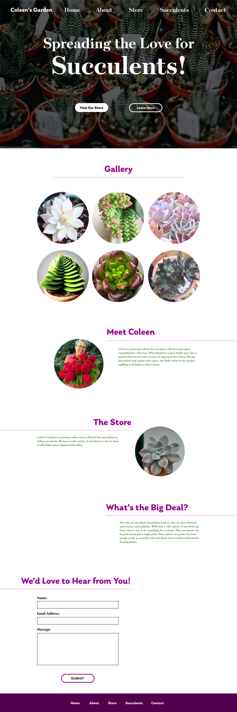

Annual Report

Project Details
This project is a coded site for a family online shop that sells succulents and cactus. It is a multi-page site that features a link to the online eBay site where the store is hosted. It also contains information about succulents and the various types that are out there.

Process
The process started with coming up with the UI design for the site. Using Adobe XD, I began designing boards for the layout. After 3 rounds of designs, a finalized design was made. From there, the coding of the site began. For this project, I used a GitHub repository to edit the coded site. It was challenging getting certain things to function properly, such as the gallery on the succulents page.